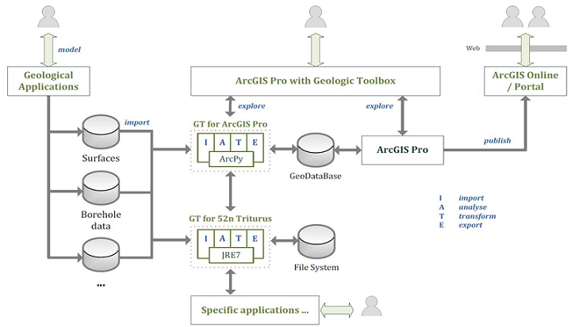

Besides the GeologicToolbox for ArcGIS Pro, additionally Java implementations which run independently from ArcGIS Pro are available. The Java code mainly addresses Java programmers (although principally everyone should be able to run them). To execute these helpers a suitable Java Runtime Environment and the current Java-code from the 52n Triturus project is needed.
